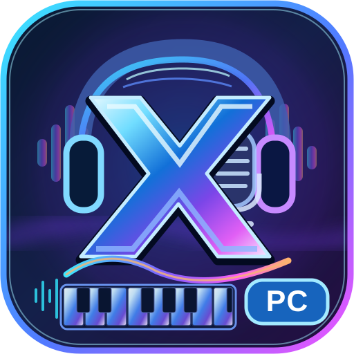

THE X-STAGE COLLECTION
ทุกความสนุก
เริ่มจากเวทีของคุณ
ค้นพบแอปของ X-Stage ในที่เดียว ตั้งแต่ร้องคาราโอเกะ สร้างและจัดการเพลง ไปจนถึงแสดงภาพบนทีวี พร้อมเลือกใช้งานให้เหมาะกับอุปกรณ์ของคุณ
พร้อมให้เลือกใช้บนWebWindowsAndroid TV
X-STAGE LIVE01 / FEATURED APP
KARAOKE ONLINE✦
◀◀▶▶▶
♫
X-Stage Karaokeเวทีโปรดของคุณ อยู่ใกล้แค่คลิก
คัดสรรเพื่อคุณ
DISCOVER MOREสร้าง เล่น และแบ่งปันประสบการณ์
EXPLORE X-STAGE
เลือกแอปที่ใช่สำหรับคุณ
คลิกดูรายละเอียด ฟีเจอร์ และช่องทางเข้าใช้งานหรือดาวน์โหลดแต่ละแอป

WINDOWS · MUSIC TOOLS
ดูรายละเอียด
X-Stage Song Studio PC
ตรวจเพลงซ้ำ จัดการเนื้อร้อง และเตรียมเพลง
ตรวจสอบรุ่นล่าสุด…ไม่พบแอปที่ตรงกับคำค้นหา ลองเปลี่ยนคำค้นหาหรือหมวดหมู่
ABOUT X-STAGEหนึ่งโครงการ
หนึ่งโครงการ
หลากหลายวิธีสร้างเวที
X-Stage รวมเครื่องมือด้านคาราโอเกะและการเตรียมเพลงไว้ในระบบนิเวศเดียวกัน หน้านี้เป็นจุดเริ่มต้นสำหรับเลือกแอป ตรวจสอบสถานะเผยแพร่ และไปยังช่องทางที่เหมาะสม โดยไม่ต้องค้นหาลิงก์แยกหลายแห่ง
ดูโครงการบน GitHub